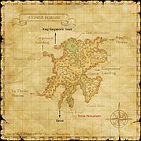

Description
Jugner Forest is an outdoor area in Norvallen.
Map

Involved in Quests / Missions
| Quest / Mission | Type | Starter | Location |
|---|---|---|---|
| A Purchase of Arms | General | Helbort | Southern San d'Oria (K-7) |
| A Timely Visit | General | Deraquien | Southern San d'Oria (F-7) |
| An Explorer's Footsteps | Map | Abelard | Selbina (H-9) |
| Blessed Radiance | NPC | Luto Mewrilah | Upper Jeuno (G-8) |
| Blighted Gloom | NPC | Luto Mewrilah | Upper Jeuno (G-8) |
| Garrison/Jugner Forest | Garrison | --- | --- |
| Grimy Signposts | General | Maugie | Southern San d'Oria (L-9) |
| Expeditionary Force/Jugner Forest | Expeditionary Force | --- | --- |
| Sin Hunting | AF (RNG) | Perih Vashai | Windurst Woods (K-7) |
NPCs
| Name | Location | Type |
|---|---|---|
| Alexius | pos=I-6 | Quest NPC |
| Mionie | pos=I-8 | Outpost Merchant |
| Perevie | pos=I-6 | Armor Depository: (Ballista) |
| Pure Heart, I.M. | pos=L-5 | Conquest Overseer: Bastok: Outland Guard |
| Takamoto, I.M. | pos=I-8 | Conquest Overseer: Bastok: Outpost Guard |
| Taumiale, R.K. | pos=L-5 | Conquest Overseer: San d'Oria: Outland Guard |
| Chaplion, R.K. | pos=I-8 | Conquest Overseer: San d'Oria: Outpost Guard |
| Geruru, W.W. | pos=L-5 | Conquest Overseer: Windurst: Outland Guard |
| Bubchu-Bibinchu, W.W. | pos=I-8 | Conquest Overseer: Windurst: Outpost Guard |
Notorious Monsters
| Name | Level | Drops | Steal | Family | Spawns | Notes |
|---|---|---|---|---|---|---|
| Panzer Percival | 25-26 | Beetle Jaw Beetle Shell Insect Wing Neckchopper | — |  BeetlesImage source BeetlesImage source | — | A, L, S, Sc |
| Fraelissa | 33-35 | Mahogany Log Almogavar Bow Dryad Root Mistletoe Puffball Petrified Log Rosewood Log Ebony Log | — |  TreantsImage source TreantsImage source | — | A, H |
| Meteormauler Zhagtegg | 35-40 | Garde Pick | Beastcoin |  OrcsImage source OrcsImage source | — | A, L, S, Sc |
| Fradubio | 58 | Mahogany Log Bellicose Mantle Dryad Root Mistletoe Puffball Ebony Log Rosewood Log Petrified Log | — | TreantsImage source | — | Assisted by Duessa (40-50); T(H) |
| King Arthro | 55 | Crab Shell Damascene Cloth Land Crab Meat Magic Cuisses Reraiser Velocious Belt Vile Elixir | — |  CrabsImage source CrabsImage source | — | A, H |
Regular Monsters


Event Monsters
| Name | Level | Drops | Steal | Family | Spawns | Notes |
|---|---|---|---|---|---|---|
| Giollemitte B Feroun | — | — | — |  ShadowsImage source ShadowsImage source | 1 | Spawned Quest: A Timely Visit; A, L, H, HP |
| Skeleton Esquire | — | — | Bone Chip |  SkeletonsImage source SkeletonsImage source | 1 | Spawned Quest: A Timely Visit; A, L, H, HP |
Story walkthroughs in this area
| Story | Mission / quest |
|---|---|
| CoP 3-3A | Emerald Waters — San d’Oria branch |
| CoP 7-4 | Calm Before the Storm |
| WotG S-12 | Face of the Future |
| WotG 10 | Daughter of a Knight |
| ACP 2 | The Echo Awakens |
References
External references describe their own server or retail rules. Documented Zenith changes take precedence.
Map credits: Map 1 — HorizonXI Wiki. Original game maps © SQUARE ENIX; redrawn maps retain the credited authorship and license.

Additional level-75 reference


Located to the east of the Kingdom of San d'Oria, this vast, dense woodland is often shrouded in darkness--even during the day. Before the construction of a main road that connected the adjoining areas, travelers and merchants often shunned the Jugner Forest; all would fear the ferocious beasts that lurked in the shadows of the mighty trees. Even today, only a large caravan protected by hired mercenaries could survive an attack from the Orcs and Goblin raiders that prey on passersby.
Connecting Areas
- King Ranperre's Tomb at (F-5) - Exit only
- Batallia Downs at (L-4)
- Carpenters' Landing at (E-6, J-8)
- Davoi at (G-12)
- La Theine Plateau at (D-11)
Involved in Quests/Missions
| Quest | Type | Starter | Location |
| A Purchase of Arms | General | Helbort | Southern San d'Oria (K-7) |
| A Timely Visit | General | Deraquien | Southern San d'Oria (F-7) |
| An Explorer's Footsteps | Maps | Abelard | Selbina (H-9) |
| Blessed Radiance | NPC | Luto Mewrilah | Upper Jeuno (G-8) |
| Blighted Gloom | NPC | Luto Mewrilah | Upper Jeuno (G-8) |
| Garrison/Jugner Forest | Garrison | --- | --- |
| Grimy Signposts | General | Maugie | Southern San d'Oria (L-9) |
| EF: Jugner Forest | Expeditionary Force | --- | --- |
| Sin Hunting | AF (RNG) | Perih Vashai | Windurst Woods (K-7) |
| Mission | Country | Starter | Location |
| San d'Oria Mission 3-2:The Crystal Spring | San d'Oria | San d'Orian Gate Guard | --- |
NPCs Found Here
Logging
|
Weather
Chocobo Digging
| ||||||||||||||||||||||||||||||||||||||||||||||||||||||||||||||||||||||||||||||||||||||||||||||||
Fishing


Notorious Monsters Found Here
|
Name |
Level |
Drops |
Steal |
Family |
Spawns |
Notes | |||||||
| Duessa | 40 - 50 | Sapling | |||||||||||
| Fradubio | 58 - 58 | Treant | 1 | ||||||||||
| Fraelissa | 33 - 35 | Treant | 1 | ||||||||||
| Giollemitte B Feroun | Unknown | Shadow | |||||||||||
| King Arthro | 55 - 55 | Crab | 1 | ||||||||||
| Meteormauler Zhagtegg | 35 - 40 | Orc | 1 | ||||||||||
| Panzer Percival | 25 - 26 | Beetle | 1 | ||||||||||
| Skeleton Esquire | Unknown | Skeleton | |||||||||||
|
HP = Detects Low HP; M = Detects Magic; Sc = Follows by Scent; T(S) = True-sight; T(H) = True-hearing JA = Detects job abilities; WS = Detects weaponskills; Z(D) = Asleep in Daytime; Z(N) = Asleep at Nighttime | |||||||||||||
Mobs Found Here
|
Name |
Level |
Drops |
Steal |
Family |
Spawns |
Notes | |||||||
| Boggart | 25 - 27 | Evil Weapon | |||||||||||
| Bogy | 25 - 29 | Ghost | |||||||||||
| Brutal Sheep | 18 - 21 | Sheep | |||||||||||
| Ferocious Pugil | 24 - 25 | Pugil | Fished Up | ||||||||||
| Forest Leech | 19 - 22 | Leech | |||||||||||
| Forest Tiger | 22 - 25 | Tiger | |||||||||||
| Ghoul | 16 - 26 | Skeleton | |||||||||||
| Goblin Ambusher | 16 - 20 | Goblin | |||||||||||
| Goblin Butcher | 16 - 20 | Goblin | |||||||||||
| Goblin Digger | 18 - 21 | Goblin | |||||||||||
| Goblin Gambler | 21 - 25 | Goblin | |||||||||||
| Goblin Leecher | 21 - 25 | Goblin | |||||||||||
| Goblin Mugger | 21 - 25 | Goblin | |||||||||||
| Goblin Tinkerer | 16 - 20 | Goblin | |||||||||||
Huge Leech
|
27 - 29 | Leech | Fished up
|
||||||||||
| Jugner Funguar | 21 - 25 | Funguar | |||||||||||
| Knight Crab | 35 - 35 | Crab | |||||||||||
| Land Pugil | 17 - 20 | Pugil | |||||||||||
| Orcish Cursemaker | 21 - 25 | Orc | A, S | ||||||||||
| Orcish Fighter | 21 - 25 | Orc | A, S | ||||||||||
| Orcish Grunt | 16 - 20 | Orc | A, S | ||||||||||
| Orcish Neckchopper | 16 - 20 | Orc | A, S | ||||||||||
| Orcish Serjeant | 21 - 25 | Orc | A, S | ||||||||||
| Orcish Stonechucker | 16 - 20 | Orc | A, S | ||||||||||
| Scavenging Hound | 18 - 25 | Hound | |||||||||||
| Screamer | 15 - 18 | Bird | |||||||||||
| Snipper | 17 - 20 | Crab | |||||||||||
| Spring Pugil | 16 - 18 | Pugil | |||||||||||
| Stag Beetle | 20 - 23 | Beetle | |||||||||||
Stag Crab
|
16 - 18 | Crab | Fished up
|
||||||||||
Thread Leech
|
19 - 22 | Leech | Fished up
|
||||||||||
| Thunder Elemental | 27 - 29 | Elemental | |||||||||||
| Walking Tree | 25 - 28 | Treant | A, H | ||||||||||
| Wandering Sapling | 13 - 16 | Sapling | |||||||||||
| Water Elemental | 27 - 29 | Elemental | |||||||||||
| Will-o'-the-Wisp | 24 - 25 | Bomb | |||||||||||
| Zombie | 16 - 26 | Skeleton | |||||||||||
|
HP = Detects Low HP; M = Detects Magic; Sc = Follows by Scent; T(S) = True-sight; T(H) = True-hearing JA = Detects job abilities; WS = Detects weaponskills; Z(D) = Asleep in Daytime; Z(N) = Asleep at Nighttime | |||||||||||||
Adapted from Eden Wiki: Jugner Forest · Contributors and history · CC BY-SA 4.0. Revision 45519. Layout, links and optional background text adapted for Zenith.